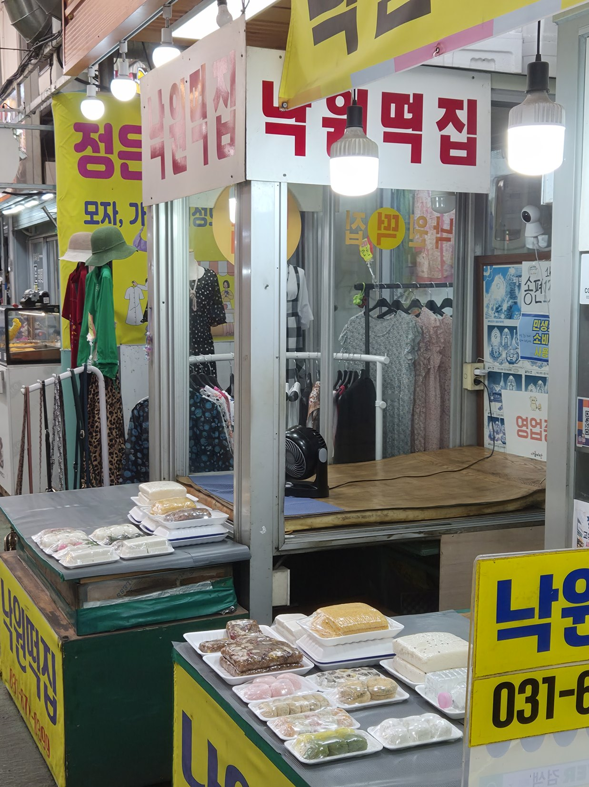

From the Editors
8월의 마지막 일요일에 쓰는 편지
에어컨 아래서 냉면만 찾던 날들이 있었다.
그런데 어느 저녁, 갑자기 뜨거운 게 먹고 싶어진다. 창문을 열어두고 잤는데 새벽에 얇은 이불을 끌어당겼던 날. 대개 그 다음 날쯤이다. 몸이 먼저 계절을 알아차리고 국물을 찾는다.
바로 그 타이밍에 맞춰 안성으로 갔다.
조선시대, 삼남지방의 물산은 서울로 올라가기 전에 한 번 안성에 모였다. 전라도의 쌀과 경상도의 무명, 충청도의 곡식이 이 자리에서 짐을 풀었다가 다시 실렸다. 사람이 모이는 곳에는 반드시 밥집이 생긴다. 안성국밥은 그 자리에서 태어난 음식이다.

흔한 음식을 다룬다는 뜻은 아니다. 국밥은 전국 어디에나 있다. 그런데 안성의 국밥에는 장터의 시간이 남아 있다. 무엇을 넣고 언제 넣는지, 왜 채소가 그렇게 많은지. 그 안에 이 지역이 살아온 방식이 들어 있다.
그래서 국밥에서 시작해 안성 전체로 넓혀 갔다.
뚝배기가 놓이는 순간 안경이 흐려지는 몇 초. 열다섯 시간을 끓이는 사람이 매달 두드리는 계산기. 장이 서는 날 아침의 시장 소리. 걸어서 도착한 호숫가에서 꺼내 먹는, 식어서 단단해진 인절미. 그리고 봉지마다 다른 이름이 붙어 있는 포도까지. 늦여름 안성의 하루를 한 상에 차렸다.
여기서 말하는 뜨거움은 국물의 온도이기도 하지만, 그 한 그릇을 어제와 같게 지켜내는 사람들의 시간이기도 하다.
마지막에 9월 축제 캘린더를 붙였다. 이번 주말이 아니어도 괜찮다는 뜻이다.
이제 그 하루로 초대한다. 천천히 읽고, 마음에 드는 날짜에 다녀오시길.